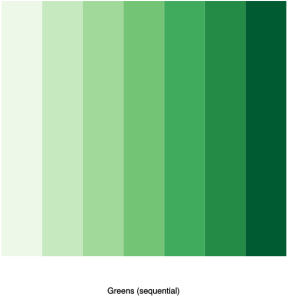
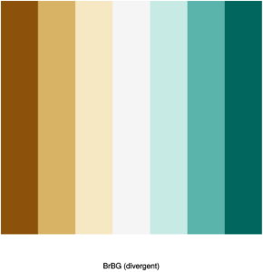
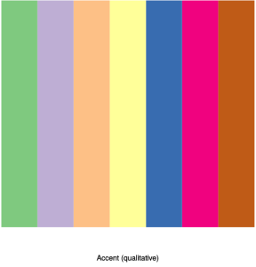
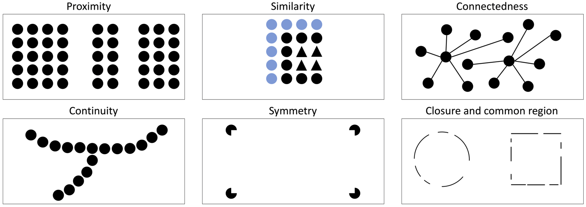
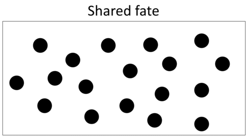
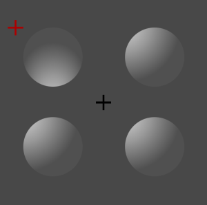

2 The human visual system
About half (mainly the rear half) of the human brain is devoted to processing visual information. Within that, the lower (ventral) section is primarily concerned with the analysis what (visual features – colour, size, shape…) and the upper (dorsal) section is mainly concerned with where (spatial location, relative positions of objects). “…visual information and spatial information appear to be processed differently and separately from each other” (Knauff, 2013).
The visual system is the product of millions of years of evolution from simple light sensitive cells to the complexity of the human eye. Clearly human vision did not evolve for data visualisation as this is a relatively recent practice. In order to understand the visual system’s strengths and weaknesses for data visualisation we need to understand the purposes for which it evolved and how it works.
2.1 Overview of visual system
In humans, vision is the primary sense for perceiving the external environment. It is used for navigation, recognising friends, locating food and identifying danger, such as a crouching tiger. The human visual system has a computationally impossible job to do: from a 2D projection on the back of each eye it must reconstruct the shape and position of objects in the 3D world. Computer vision systems are still floundering on this task. Even worse the visual system needs to work quickly: when it comes to crouching tigers a few milliseconds can make all of the difference. As a result the human vision system has inbuilt biases and heuristics for recognising objects quickly: optical illusions reveal how these biases and heuristics can be tricked into making wrong deductions. Effective data visualisation takes advantage of these heuristics to allow the human visual system to quickly perceive patterns and groups.
A dangerous hidden tiger
License: Public Domain
The human visual system has 3 main level or stages:
- Parallel processing to extract low level properties: colour, texture, lines and movement
- Rapid serial processing divides the visual field into regions of similar colour or texture and achieves “proto-object” recognition of surfaces, boundaries and relative depth. This is driven both top-down by visual attention and bottom-up by low level properties.
- Visual working memory: object recognition & attention, this is under conscious control
2.2 The eye
Main components of the human eye (Based on Figure 2.10 from Information Visualization – Perception for Design by Colin Ware, 2013)
Light enters the human eye through the pupil and then passes through the lens which focuses the (inverted) image onto the retina at the back of the eye. The retina contains two kinds of light sensitive cells: rods and cones. There are about 100-120 million rods and 6 million cones. Rods are very sensitive to light but only see in monochrome and are not very acute. Cones are less sensitive so do not work well at night but see colour and are more acute. Cones are primarily responsible for day-time vision.
Cones are not distributed uniformly across the retina. Most of the cones are in a small area called the fovea which is responsible for detailed vision.
- We see the image falling on the fovea clearly. This corresponds to about \(2^o\) of vision which is about an area 2cm by 2cm at arms length
- The rest of the eye provides peripheral vision
While we believe that we simultaneously see all regions of a data visualisation in detail this is not really true: our eye rapidly darts around the image, fixating on a different region for a few milliseconds and then moving on. The visual system stitches these detailed images together to create an illusion that we see the whole graphic in detail. Nonetheless peripheral vision allows us to see a much larger region in coarse resolution and can direct attention to changes and movement.
2.3 Marks and channels
Graphics are made up of marks, the basic graphical elements such as a glyphs, lines and regions. A mark’s visual appearance and spatial attributes such as position, shape and size are given by visual variables. Information graphics map data attributes to these visual variables. Low-level visual processing uses different neural pathways to process different visual variables. These pathways are often called visual channels. Different pathways are used to detect motion, orientation, texture, colour and size. This means that these channels are perceptually distinct.
Where possible different channels should be used to encode different attributes, rather than using the same channel such as colour to encode multiple attributes. It does not hurt to use redundant encoding.
Lines and shapes are recognised by specialised cells called Gabor receptors. Different receptors respond to different frequency and orientation of input lines. This means that symbols should be as distinct as possible from their background and from one another in terms of their components spatial frequency and orientation.
Feature channels can be used to make symbols more distinct from one another. Crosses are perceptually distinct to filled circles, so it is easier to separate males from females in the graph in the middle than the graph on the left. The graph on the right use redundant color coding in addition to more distinctive shapes making it even easier to distinguish the two sexes. (Based on Figure 5.8 from Information Visualization – Perception for Design by Colin Ware, 2013)
2.4 Colour
Colour is actually composed of three different channels. Cones provide colour vision: they come in three varieties each with a peak response to a different light frequency within the visible light spectrum. Low-level visual processing encodes these in terms of three opponent colour channels: red to green; blue to yellow and, the most important channel, black to white which encodes luminance.
Top: cut-away 3D models of HSL (a); bottom: two-dimensional plots showing two of a model’s three parameters at once, holding the other constant (b, c, d). (Based on figure 1 on HSL and HSV page of Wikipedia)
License: CC Attribution 3.0 Unported (CC BY 3.0)
In data visualisation it is common to think about colour in terms of the HSL colour space: H for hue-the choice of pure colour, S for saturation-the amount of white mixed with the colour, and L for lightness-the amount of black mixed with the colour. Another colour space that is common in computer graphics is the RGB system which codes colours in terms of the amount of red, green and blue. While HSL is not ideal it is a closer match to the actual perceptual system and should be used instead of RGB.
One thing to be aware of is that colours inhibit adjacent colours. This means that the same colour can appear quite different in different contexts. Boundaries between colours help this. You also need to be aware that the amount of area affects perception. Use low-saturation lighter colours for large background regions, higher-saturation darker colours for small foreground shapes or regions.
Colour inhibition: the colors of the squares labeled A and B are the same! If you don’t believe this download the image and check the RGBs value in a photo editor. (This figure is from Edward H. Adelson )
There is also size inhibition. Believe it or not the two orange circles in the center are in the same size. (figure is from Wikipedia)
License: Public Domain
Colour choice is quite difficult. Luminance and saturation are automatically interpreted as ordered while hue is not. However hues that vary along only the red-green or blue-yellow channel do have a natural ordering. Fortunately many colour maps or palettes and tools have been developed to help in data visualisation design. One of the most commonly used is by Cindy Brewer. Her ColorBrewer tool enables selection of handcrafted color schemes for various tasks. Her colour schemes are also available for use in R (RColorBrewer, examples below). Her tool distinguishes between three different kinds of data: sequential (ordered but ascending from a single least value), diverging (ordered but ascending and descending around a neutral value), and qualitative (categorical). Ware (2013) also presents a number of colour maps.



2.5 Colour-blindness & accessibility
One thing to aware of when using colour is that colour blindness is quite common. About 10% of males and 1% of women have some kind of colour blindness. The different colour channels explain the different kinds of colour blindness. Most commonly differentiation on the red-green channel is reduced (about 8% of men but much less common in women) while blue-yellow channel differentiation is much less common and not sex related.
When designing colour schemes the easiest strategy is to ensure that hue is not the only channel used to encode information. For categorical data choose colour maps that vary in luminance or saturation as well and if possible avoid colour maps that emphasise red-green. Sites such as http://www.color-blindness.com provide on-line tools to show what an image looks like with different kinds of colour blindness.
Maureen Stone an expert in the use of colour (who now works for Tableau) introduced the slogan Get it Right in Black and White. She suggests that you should develop visualisations in black and white first, ensuring that the important aspects of the visualisation are still legible when the image is rendered in greyscale. Hue and saturation, i.e. colour, is added later, to provide redundant or secondary information.
2.6 Which visual variable should I use?
Visual variables are not interchangeable: the same data attribute encoded using different visual variables will not be perceived as effectively. Different variables vary in terms of
- salience — how quickly they are noticed. For instance movement is more salient than orientation.
- discriminability — how many distinct values can you encode without confusion to the user
- accuracy — how easily can you compare different values.
Experiments have shown that the visual variables commonly used for encoding quantitative or categorical data vary greatly in accuracy and discriminability . The following figure summarises their effectiveness
Effectiveness of different visual channels. (Fig 5.1 from Visualization Analysis and Design by Tamara Munzner, 2014)
License: CC Attribution-ShareAlike 4.0 International (CC BY-SA 4.0)
What this means is that you should use bar charts rather than pie charts or doughnut charts and that if occlusion is not a problem then a prism map is more effective than a choropleth map for ungrouped data. And you should never, never use a 3D pie-chart!
Related to discriminability is the degree of “visual popout”– that is how well target items standout from the other items. Visual pre-attentive processing occurs in parallel and objects that are pre-attentively distinct from the other items are are found quickly and the time taken is independent of the number of non-target items. Without visual popout target items must be found using a conscious serial search through all items and so the time taken to find target items depends upon the number of non-target items. Many channels support visual popout, at least to some extent. They include line orientation, length and width, size, curvature, spatial grouping, blur, annotation, color, motion and position. Pre-attentive cues should be used when directing or attracting attention or to show search results.
Examples of glyphs showing different kinds of visual pop-out. (Based on Figure 5.11 from Information Visualization – Perception for Design by Colin Ware, 2013)
You cannot choose visual variables independently of one another as the underlying visual channels interfere with other to varying degrees. At one extreme are visual variables like colour and location that are separable in the sense that they have very little interference and at the other are variables like the red-green and yellow-blue colour channels that are integral and have high interference. All things being equal you should use visual channels that interfere as little as possible.
Examples of glyphs coded according to two display attributes. At the top are more integral coding pairs. At the bottom are more separable coding pairs. (Based on Figure 5.23 from Information Visualization – Perception for Design by Colin Ware, 2013)
2.7 Grouping
Colour, line orientation and frequency, stereoscopic depth and motion are identified in the first stage of visual processing. In the next stage contours, regions and foreground and background are identified. This is the stage in which pattern perception is used to extract objects from low-level visual features.
Perception of visual patterns was first seriously studied in the early 20th century by a group of German psychologists who identified a set of laws of pattern perception which were called the Gestalt laws since Gestalt is the German word for pattern. Based on this research we now know there are many ways in which people automatically organise element
- Proximity: Elements that are close together form groups.
- Similarity: Elements that are similar in some way such as colour or shape form a group
- Connectedness: Connection by lines is a powerful way of grouping elements
- Continuity: We tend to group regions and lines to form smooth and continuous shapes.
- Symmetry: We are good at recognising bilateral symmetry, especially around a horizontal or vertical axis and group the symmetric lines together to form an object.
- Closure and common region: we like to see closed contours and will mentally extend lines to close them. Being “inside” a closed contour is a very powerful grouping principle
- Shared fate: Elements that move together are grouped together.


These principles capture the heuristic rules that the human visual system uses to group the lines and regions of similar colour and texture in 2D in order to segment the image into foreground and background and into different objects so that they can understand what they are really looking at in the 3D world.
Information graphics take advantage of these heuristic rules to help us see patterns etc. For example, scatter plots make use of proximity, node link diagrams make use of connectedness, Venn diagrams of common region and paired bar charts make use of symmetry.
2.8 Perceiving 3D
An important part of understanding our 3D environment is the way in which the visual system extracts information about depth from what are essentially two 2D visual images, one for each eye. A wide number of different depth cues are used, most of which are now used to create lifelike immersive 3D visualisations.
Scene from 3D animation constructed by Monash academic Tom Chandler showing how the Cambodian temple complex of Angkor may have looked.
License: Copyright © Monash University, unless otherwise stated. All Rights Reserved.
Monocular static cues
- Occlusion: this is the most important depth cue–objects in front obscure those behind.
- Linear perspective: foreshortening, parallel lines converging to a point. We see the sides of the road converge and that people get smaller in the distance.
- Shape-from-shading: We see this illustrated below – here light from above is suggested by the shading. Concave or convex dimple shapes are suggested by shading. In the Angkor image above it used to show the shape of the elephant’s head.
- 
- Shape-from-texture distortion: Wire frames make use of this to show shape
- Cast shadows: Cast shadows give a clue about height above the object on which the shadow is cast.
- Familiar size: Familiar objects allow us to judge distance because we know how big they actually are.
- Depth of focus: our eyes change focus to bring the image of the object we are looking at into sharp focus on the fovea. Objects that are closer or further away are blurred giving an ambiguous clue as to their depth.
Monocular dynamic (moving picture)
- Structure from motion: rotation and movement of an object relative to the observer allowing them to see it from different points of view is an extremely important depth cue.
Binocular
- Vergence angle: When the eyes look object at an object at a certain depth the visual system can make use of the difference in angle between the line-of-sight vectors of the two eyes to measure depth of objects that are close by (roughly within arm’s length)
- Stereoscopic depth: The visual system can make use of small differences between the images on each eye to see depth. 3D TVs and displays provide stereoscopic vision. While stereoscopic vision (in combination with the other cues) can provide a sense of truly immersive 3D it is only one of many depth cues and is actually not that important. Something like 20% of people do not have stereoscopic vision and many never notice its absence.
Not all of these depth cues are needed to create realistic 3D graphics and may not be needed at all in some tasks. Ware (2013) provides a more detailed analysis. Occlusion is the most important depth cue. I think structure-from-motion is the next most important and can also mitigate the disadvantage of occlusion hiding information. Ware recommends that if structure-from-motion is used then so should occlusion, linear perspective and texture-distortion or else it looks strange.
Data visualisations also make use of more artificial depth cues to show depth. These include showing gridded ground and side planes to show perspective distortion. An extra cue is to projecting the 3D data onto these planes. In the case of 3D scatter plots it is common to drop lines to the ground plane so that the points look like pins.
An important question is when to 2D or not 2D? The general rule is that you should use as few dimensions as is required. Thus if if you are simply comparing the magnitude of a single attribute use only a single dimension and plot the values on a uniform scale. There is no need for 2D in this case.
In the case of 3D it should be used when visualising inherently three-dimensional structures such as buildings and other physical objects and flows. This is why immersive 3D is so important in scientific visualisation.
The use of 3D for abstract data visualisation is less easy to justify and by default you should use 2D. The disadvantage of 3D is that occlusion hides information and the perspective distorts size, making it difficult to compare magnitudes. Interaction is also more difficult. For this reason 3D bar charts are a very bad idea. However my view is that 3D will be used more frequently in abstract data visualisation when low-cost 3D visualisation technologies, such as the HTC Vive, Oculus Rift or zSpace, that allow the user to naturally vary their viewpoint become available. By allowing the observer to move relative to the graphic the problems of occlusion and perspective distortion are mitigated. They will be useful when looking at actual 3D visualisations like 3D scatter plots, prism maps, space-time cubes and congruent 2D surfaces drawn in 3D (sometimes called 2 1/2 D).
2.9 Visual attention and working memory
In the third and highest level of visual processing, visual objects are held in working memory while the viewer performs some task such as finding the shortest route between two cities. At this level processing is conscious and sequential. Only a few objects are held in memory at one time.
We use several types of memory in visual processing: Iconic memory (aka visual cache) which is essentially a very short-term snapshot of the image on the retina; visual short-term memory (STM) which holds the visual features of objects of immediate attention; spatial STM which holds the position/location of the objects; and long-term memory (LTM) which holds memories retained from previous experiences. There are similar kinds of memory for other modalities such as echoic and verbal working memory for sound. (e.g. Baddeley, 2007).
Visual working memory holds visual objects from long-term memory as well as those on the screen. Actually visual working memory is probably not distinct from long-term memory, it is simply the current activated long-term memories. We can also think of the visualisation on the screen as a different kind of memory: external visual memory.
One of the most surprising finds of psychologists has been how few objects can be held in our working memory, somewhere between 3 and 5, depending upon task. And we only remember 3-5 objects if we are concentrating, usually only 1 or 2 objects are remembered.
To most people this limited capacity seems extraordinary, as we feel as if we have a rich internal representation of the world we are seeing. This is however not true. Inattentional change blindness is a powerful demonstration of our lack of memory capacity. Because we remember so little, we do not notice large changes between what we see in one view and the next. Change blindness is graphically shown in this video. The experiment is about 1:40 into the video but I encourage you to watch the entire video.
The limited capacity of working memory has strong implications for visualisation. In particular it means that we are better to encode multiple attributes into one visual object rather than using separate visual objects for each attribute, since, if multiple data is integrated into a single object, more information can be held in visual working memory. For instance if we are examining wind direction, temperature and wind strength we are better off encoding this in a single glyph such as an arrow whose orientation gives the direction, colour the temperature and length or width the strength rather using three different glyphs.
Visual attention is the key to understanding how information flows between the different visual processing stages. As the viewer performs the task their attention turns to different parts of the image. When they move their eye to focus on a new region, subconscious parallel processing of stage 1 extracts low-level properties. Visual attention guides stage 2 processing to extract the surfaces and features of the objects that the viewer is now looking at and stage 3 processing recognises these objects and places those being attended to in working memory. However, visual attention may also be driven by stage 1: if a light blinks in peripheral vision, this will be noticed subconsciously ad the viewers attention will be drawn to it.
Controlling attention is a key-part of effective visualisations. You need to direct attention to the salient parts of the display.
A recent theory suggests that for tasks involving visual reasoning, the spatial aspects of a display are the most important – too much visual detail reduces performance (visual-impedance hypothesis, Knauff & Johnson-Laird, 2002). This is consistent with calls from some information visualisation designers (e.g. Tufte) to produce clean, minimalist displays from which irrelevant detail (‘chartjunk’) is eliminated.
2.10 Summary
In this topic we have investigated how the human visual system works. We have seen how it has 3 main stages: low-level feature extraction; region, depth and boundary recognition; and visual working memory and object recognition.
The design of good visualisations needs to take into account the perceptual and cognitive limitations of the visual system.
- Different visual channels should be used to encode different attributes and the choice of channel is important
- Low-level feature recognition occurs in parallel and supports “visual popout”.
- Colour schemes and interfaces should be designed to cater for colour blindness.
- Pattern matching and grouping makes use of visual heuristics
- Use 1D in preference to 2D and 2D in preference to 3D unless there is a strong reason not to.
- We have extremely limited working memory: attention should be directed to salient parts of the display.
FURTHER READING
The material in this topic is mostly based on
Munzner, Tamara. Visualization Analysis and Design. CRC Press, 2014.
Ware, Colin. Information visualization: perception for design (3rd Ed.). Elsevier, 2013.
Further reading is
- Chapter 10 of Munzner, 2014.